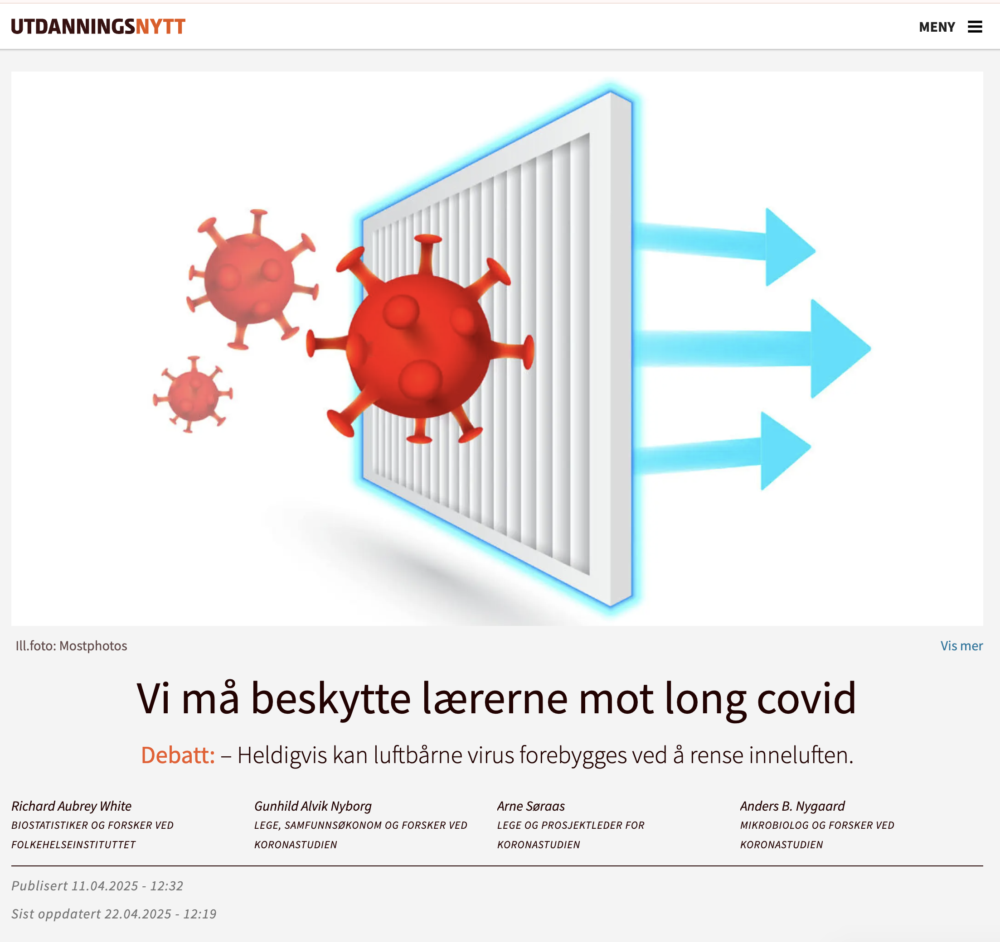
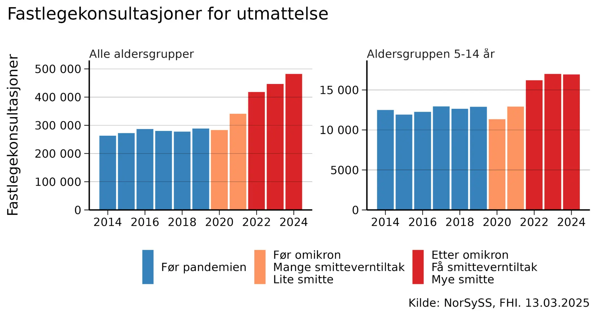

![]()

Den 12. mars 2025 markerte et historisk øyeblikk for norsk folkehelse. Erna Solberg anerkjente at long covid kan være en viktig årsak til økningen i sykefraværet og kom med et valgløfte om å forbedre behandlingen.
Men behandling er bare halve løsningen. Vi må også forebygge.
Long covid skyldes koronainfeksjoner. Jo oftere folk blir smittet, desto flere vil utvikle long covid. Hvis vi reduserer smitten, vil færre bli kronisk syke.
Tidlig i pandemien trodde man feilaktig at koronaviruset spredte seg via dråper. Nå vet vi at koronaviruset er luftbårent – det sprer seg i luften som røyk. Heldigvis kan luftbårne virus forebygges ved å rense inneluften.
Florence Nightingale skrev i 1859: «Den aller første regelen for sykepleie: Hold luften han puster så ren som uteluften.» Dette prinsippet bør vi strebe etter også i dag. Ved å rense luften kan vi forebygge luftveisinfeksjoner, allergiplager og annet ubehag.
Vi har tre effektive metoder for å rense inneluften: ventilasjon, filtrering og UVC-lys.
- Ventilasjon tilfører frisk luft, ideelt gjennom balansert ventilasjon.
- Luftfiltrering fjerner luftbårne virus ved hjelp av luftrensere. Finland har med suksess brukt dette i barnehager for å redusere sykefravær. FHI og SINTEF forsker på om luftfiltrering kan forebygge infeksjoner med det nye koronaviruset, men forskningen tar tid.
- UVC-lys har i flere tiår vært brukt i skoler og sykehus for å hindre spredning av meslinger, tuberkulose og influensa. Nyere «far UVC»-teknologi er enda tryggere og lettere å installere i høyt trafikkerte områder som kollektivtransport og korridorer. Danske ambulanser og det amerikanske forsvaret bruker allerede denne teknologien.
En «inneklima»-revolusjon skjer nå over hele verden – men Norge henger etter
Biden-administrasjonen utviklet, som en konsekvens av pandemien, nye inneklimastandarder for å beskytte folkehelsen. Japanske restauranter viser målinger av luftkvalitet i sanntid. Australia har nylig vedtatt en lov som slår fast at «elever og ansatte i offentlige skoler fortjener et trygt læringsmiljø, inkludert god luftkvalitet … Dårlig ventilerte innendørsrom øker spredningen av luftbårne sykdommer og utgjør en risiko for unge mennesker, ansatte og hele samfunnet.»
Mens andre land handler, henger Norge etter. Folkehelseinstituttets fagmiljø for inneklima ble lagt ned, i en periode hvor antallet koronainfeksjoner økte betydelig. I tiden etter, har fastlegekonsultasjoner for utmattelse og sykefravær knyttet til long covid økt kraftig. Disse plagene rammer ikke bare voksne, men også barn, som stadig smittes i skoler med dårlig inneklima og risikerer langvarige helseplager.

Lærere er utsatt — long covid kan være en yrkesskadeBarna smitter ikke bare hverandre — de kan også smitte familiene sine, og lærerne sine, selv når barna selv ikke har symptomer. Noen av dem får også long covid. 36 % av skademeldinger knyttet til covid-19 har kommet fra lærere, barnehageansatte og andre skoleansatte. Long covid kan være en yrkesskade. Fagforeningene må ta grep for å sikre at skolene blir trygge arbeidsplasser. Denne typen smitte kan i noen grad forebygges ved bedret luftrensing eller ventilasjon i skoler og barnehage.
Godt inneklima er avgjørende for Norges beredskap
Forbedret inneklima handler ikke bare om trivsel, helse, luftkvalitet eller å forebygge long covid i dag. Det er også viktig for Norges beredskap. Vi vet at det vil komme nye pandemier. Dersom vi nå tar et løft for å få sikrere inneklima i norske skoler, barnehager og andre offentlige bygg, vil vi være bedre beskyttet neste gang. Det vil fungere som et smittereduserende tiltak, men det vil også bidra til å begrense behovet for nedstengninger. Et bedre inneklima beskytter oss mot den stadig mer sannsynlige fugleinfluensa-pandemien – og andre fremtidige luftbårne pandemier.
Norge har mye å vinne på å handle nå. Vil norske politikere bidra til å sikre Norges folkehelse, arbeidskraft og beredskap – eller la Norge bli hengende etter?
Richard Aubrey White skriver ikke på vegne av FHI.